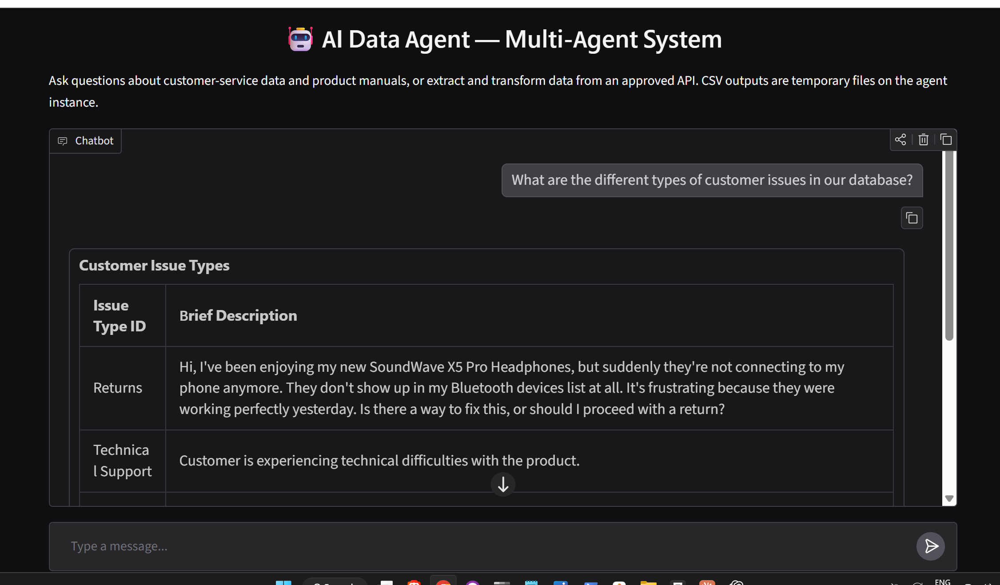

SQL analyst
Schema context → Generate → Validate → Judge → Execute → Format
SQL warehouse
Unity Catalog Delta tables
Unity Catalog Delta tables
One conversation. Three specialized workflows.
An AI application that connects customer-support data, product manuals, and ETL tools on Databricks.
Built by Pratik Bhikadiya · Python / LangGraph / MLflow / Databricks
The app passes conversation history to an MLflow ResponsesAgent. A LangGraph router selects a specialized workflow, using Databricks-hosted language models and scoped tools.
Schema context → Generate → Validate → Judge → Execute → Format
Approved API → Extract → Transform → Inspect → Summarize results
Query → Retrieve source text → Generate an answer with source filenames
Retrieval uses lexical matching over extracted PDF text. This implementation does not provision a Vector Search index.
“How many customer service tickets are there?”
Verified against the warehouse: 1,023 tickets.
“What features does AccountEase Pro offer?”
Returns a source-based response citing AccountEase Pro.pdf.
“Extract posts from https://jsonplaceholder.typicode.com/posts and keep id and title.”
Verified output: 100 rows in a temporary CSV.

Sign in to the authorized Databricks workspace, open the app, and enter a question above. Use a specific product name for documentation requests. ETL files are temporary on the serving instance. The Databricks app ↗ requires workspace access; this public page is the project showcase.
| Layer | Resource | Role |
|---|---|---|
| Application | ai-data-agent-app | Gradio chat; app service-principal authentication |
| Serving | ai_data_agent_endpoint | Hosts the agent; version 5 verified |
| Model registry | ai_agent_demo.customer_support.data_agent | MLflow model versions and declared resource dependencies |
| Data namespace | ai_agent_demo.customer_support | Volume data_files; tables cust_service_data, products, policies, product_docs |
| Agent tools | Unity Catalog SQL functions | get_schema_info, search_product_docs, and three table-access functions |
| Analytics compute | Existing SQL warehouse | SQL execution and UC function calls |
| Language models | Existing Databricks model endpoints | databricks-gpt-oss-20b and databricks-llama-4-maverick, configured by task |
| Deployment | setup_ai_data_agent | DAB job: load data → create functions → register/deploy agent |
| Validation | GitHub Actions + deployment script | Offline tests, compilation and four live smoke checks |
Verified October 11, 2026: endpoint READY / NOT_UPDATING, model v5, app RUNNING. This is a dated verification record, not a live status monitor.
This repository is a working starting point. The original workspace and source data are not provisioned for visitors. Use your own Databricks workspace, source volume, SQL warehouse and accessible model endpoints.
Install Git, Python 3.11, uv and the Databricks CLI. You need access to Apps, Model Serving, job compute, and Unity Catalog, plus permission to create project objects and use your warehouse.
git clone https://github.com/YOUR_USERNAME/ai-data-agent.git
cd ai-data-agent
databricks auth login --profile my-workspace
uv venv --python 3.11
uv pip install --python .venv/Scripts/python.exe -r requirements.txt -r src/app/requirements.txt pytest
.venv/Scripts/python.exe -m pytest -q testsCommands use Windows PowerShell paths. On macOS/Linux, replace .venv/Scripts/python.exe with .venv/bin/python.
In databricks.yml, replace the workspace profile and warehouse ID. Set your target catalog/schema, source catalog/schema/volume, unique app and endpoint names, and available LLM endpoints. Update resources/app.yml to point to your fork and branch, and configure Databricks Git access.
/Volumes/<source_catalog>/<source_schema>/<source_volume>/data_files/
cust_service_data.csv
products.csv
policies.csv
product_docs/
your-product-manual.pdfThe loader derives table names from CSV filenames. For another domain, adapt the prompts and tool references in src/agents/agent.py, the UC functions in notebook 02, and table/resource declarations in notebook 03 together. Use a dedicated target schema: the loader overwrites target tables. Refresh UC schema context after schema changes.
databricks bundle validate --strict --profile my-workspace
databricks bundle deploy --profile my-workspace
databricks bundle run setup_ai_data_agent --profile my-workspace
databricks serving-endpoints get YOUR_ENDPOINT --profile my-workspaceWait for both READY and NOT_UPDATING. A completed job can precede serving readiness. If capacity is exhausted, inspect obsolete serving allocations before retrying.
databricks bundle run ai_data_agent_app --profile my-workspace
.venv/Scripts/python.exe scripts/verify_deployment.py --helpUse your profile, host, warehouse, endpoint and app arguments. Adapt the script’s ticket-count, AccountEase PDF, and ETL expectations to your dataset. Confirm the app service principal has CAN_QUERY on the endpoint, especially after recreating it. Push app code to the configured Git branch before deploying.
Add domain-specific evaluation cases, persist ETL outputs in durable storage, add OCR for scanned PDFs, and expand retrieval when your use case needs it. The current guardrails include SELECT-only SQL, catalog/schema validation, API allowlisting, path checks, input limits, and bounded tool loops. Smoke checks do not establish accuracy for every question.
This portfolio connects data preparation and governance with agent state, tool execution, model packaging, permissions, and application verification.
Explore the repository ↗One-page architecture overview →